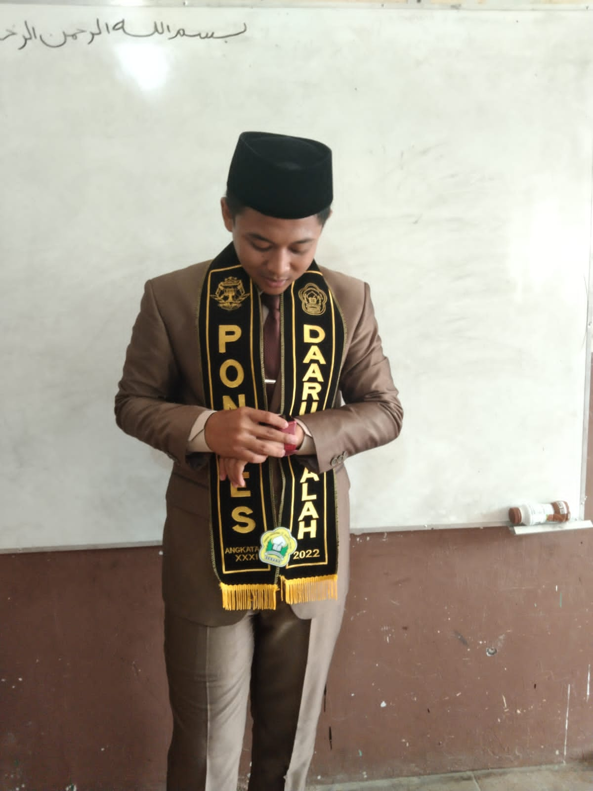

Proklamasi Kemerdekaan Indonesia dilaksanakan pada hari Jumat, 17 Agustus 1945 tahun Masehi, atau tanggal 17 Agustus 2605 menurut tahun Jepang, yang dibacakan oleh Soekarno dengan didampingi oleh Drs. Mohammad Hatta bertempat di Jalan Pegangsaan Timur 56, Jakarta Pusat. Pada tanggal 6 Agustus 1945 sebuah bom atom dijatuhkan di atas kota Hiroshima Jepang oleh Amerika Serikat yang mulai menurunkan moral semangat tentara Jepang di seluruh dunia. Sehari kemudian Badan Penyelidik Usaha Persiapan Kemerdekaan Indonesia BPUPKI, atau "Dokuritsu Junbi Cosakai", berganti nama menjadi PPKI (Panitia Persiapan Kemerdekaan Indonesia) atau disebut juga Dokuritsu Junbi Inkai dalam bahasa Jepang, untuk lebih menegaskan keinginan dan tujuan mencapai kemerdekaan Indonesia. Pada tanggal 9 Agustus 1945, bom atom kedua dijatuhkan di atas Nagasaki sehingga menyebabkan Jepang menyerah kepada Amerika Serikat dan sekutunya. Momen ini pun dimanfaatkan oleh Indonesia untuk memproklamasikan kemerdekaannya. Pengibaran bendera pada 17 Agustus 1945. Soekarno, Hatta selaku pimpinan PPKI dan Radjiman Wedyodiningrat sebagai mantan ketua BPUPKI diterbangkan ke Dalat, 250 km di sebelah timur laut Saigon, Vietnam untuk bertemu Marsekal Terauchi. Mereka dikabarkan bahwa pasukan Jepang sedang di ambang kekalahan dan akan memberikan kemerdekaan kepada Indonesia. Sementara itu di Indonesia, pada tanggal 10 Agustus 1945, Sutan Syahrir telah mendengar berita lewat radio bahwa Jepang telah menyerah kepada Sekutu. Para pejuang bawah tanah bersiap-siap memproklamasikan kemerdekaan RI, dan menolak bentuk kemerdekaan yang diberikan sebagai hadiah Jepang. Pada tanggal 12 Agustus 1945, Jepang melalui Marsekal Terauchi di Dalat, Vietnam, mengatakan kepada Soekarno, Hatta dan Radjiman bahwa pemerintah Jepang akan segera memberikan kemerdekaan kepada Indonesia dan proklamasi kemerdekaan dapat dilaksanakan dalam beberapa hari, berdasarkan tim PPKI.[1] Meskipun demikian Jepang menginginkan kemerdekaan Indonesia pada tanggal 24 Agustus. Dua hari kemudian, saat Soekarno, Hatta dan Radjiman kembali ke tanah air dari Dalat, Sutan Syahrir mendesak agar Soekarno segera memproklamasikan kemerdekaan karena menganggap hasil pertemuan di Dalat sebagai tipu muslihat Jepang, karena Jepang telah menyerah kepada Sekutu dan demi menghindari perpecahan dalam kubu nasionalis, antara yang anti dan pro Jepang. Hatta menceritakan kepada Syahrir tentang hasil pertemuan di Dalat. Soekarno belum yakin bahwa Jepang memang telah menyerah, dan proklamasi kemerdekaan RI saat itu dapat menimbulkan pertumpahan darah yang besar, dan dapat berakibat fatal jika para pejuang Indonesia belum siap. Soekarno mengingatkan Hatta bahwa Syahrir tidak berhak memproklamasikan kemerdekaan karena itu adalah hak Panitia Persiapan Kemerdekaan Indonesia (PPKI). Sementara itu Syahrir menganggap PPKI adalah badan buatan Jepang dan proklamasi kemerdekaan oleh PPKI hanya merupakan 'hadiah' dari Jepang (sic). Dikibarkannya bendera Indonesia pada 17 Agustus 1945. Pada tanggal 14 Agustus 1945 Jepang secara resmi menyerah kepada Sekutu di kapal USS Missouri. Tentara dan Angkatan Laut Jepang masih berkuasa di Indonesia karena Jepang berjanji akan mengembalikan kekuasaan di Indonesia ke tangan Sekutu. Sutan Sjahrir, Wikana, Darwis, dan Chaerul Saleh mendengar kabar ini melalui radio BBC. Setelah mendengar desas-desus Jepang bakal bertekuk lutut, golongan muda mendesak golongan tua untuk segera memproklamasikan kemerdekaan Indonesia. Namun golongan tua tidak ingin terburu-buru. Mereka tidak menginginkan terjadinya pertumpahan darah pada saat proklamasi. Konsultasi pun dilakukan dalam bentuk rapat PPKI. Golongan muda tidak menyetujui rapat itu, mengingat PPKI adalah sebuah badan yang dibentuk oleh Jepang. Mereka menginginkan kemerdekaan atas usaha bangsa kita sendiri, bukan pemberian Jepang. Soekarno dan Hatta mendatangi penguasa militer Jepang (Gunsei) untuk memperoleh konfirmasi di kantornya di Koningsplein (Medan Merdeka). Tapi kantor tersebut kosong. Soekarno dan Hatta bersama Soebardjo kemudian ke kantor Bukanfu, Laksamana Muda Maeda, di Jalan Medan Merdeka Utara (Rumah Maeda di Jl Imam Bonjol 1). Maeda menyambut kedatangan mereka dengan ucapan selamat atas keberhasilan mereka di Dalat. Sambil menjawab ia belum menerima konfirmasi serta masih menunggu instruksi dari Tokyo. Sepulang dari Maeda, Soekarno dan Hatta segera mempersiapkan pertemuan Panitia Persiapan Kemerdekaan Indonesia (PPKI) pada pukul 10 pagi 16 Agustus keesokan harinya di kantor Jalan Pejambon No 2 guna membicarakan segala sesuatu yang berhubungan dengan persiapan Proklamasi Kemerdekaan. Sehari kemudian, gejolak tekanan yang menghendaki pengambilalihan kekuasaan oleh Indonesia makin memuncak dilancarkan para pemuda dari beberapa golongan. Rapat PPKI pada 16 Agustus pukul 10 pagi tidak dilaksanakan karena Soekarno dan Hatta tidak muncul. Peserta BPUPKI Dalam perjalanan sejarah menuju kemerdekaan Indonesia, dr. Radjiman adalah satu-satunya orang yang terlibat secara akif dalam kancah perjuangan berbangsa dimulai dari munculnya Boedi Utomo sampai pembentukan BPUPKI. Manuvernya di saat memimpin Budi Utomo yang mengusulkan pembentukan milisi rakyat disetiap daerah di Indonesia (kesadaran memiliki tentara rakyat) dijawab Belanda dengan kompensasi membentuk Volksraad dan dr. Radjiman masuk di dalamnya sebagai wakil dari Boedi Utomo. Pada sidang BPUPKI pada 29 Mei 1945, ia mengajukan pertanyaan “apa dasar negara Indonesia jika kelak merdeka?†Pertanyaan ini dijawab oleh Bung Karno dengan Pancasila. Jawaban dan uraian Bung Karno tentang Pancasila sebagai dasar negara Indonesia ini kemudian ditulis oleh Radjiman selaku ketua BPUPKI dalam sebuah pengantar penerbitan buku Pancasila yang pertama tahun 1948 di Desa Dirgo, Kecamatan Widodaren, Kabupaten Ngawi. Terbongkarnya dokumen yang berada di Desa Dirgo, Kecamatan Widodaren, Kabupaten Ngawi ini menjadi temuan baru dalam sejarah Indonesia yang memaparkan kembali fakta bahwa Soekarno adalah Bapak Bangsa pencetus Pancasila. Pada tanggal 9 Agustus 1945 ia membawa Bung Karno dan Bung Hatta ke Saigon dan Da Lat untuk menemui pimpinan tentara Jepang untuk Asia Timur Raya terkait dengan pengeboman Hiroshima dan Nagasaki yang menyebabkan Jepang berencana menyerah tanpa syarat kepada Sekutu, yang akan menciptakan kekosongan kekuasaan di Indonesia. tidak tahu telah terjadi peristiwa Rengasdengklok.
Ir.Soekarno atau akrab dipanggil Bung Karno lahir pada 6 Juni 1901 di Surabaya, Jawa Timur dengan nama kecilnya Kusno Sosrodihardjo dan wafat pada 21 Juni 1970 di Jakarta. Bung Karno adalah anak dari pasangan Raden Soekemi Sosrodihardjo dan Ida Ayu Nyoman Rai. Karena sakit-sakitan, Soekarno kecil dirawat kakaknya bernama Raden Hardjodikromo di Tulungagung. Soekarno kembali tinggal dengan bapak dan ibunya pada 1909 di Mojokerto. Di Mojokerto itulah sang ayah ditugaskan sebagai kepala Eerste Inlandse School dan Soekarno pun sekolah ditempat itu. Sejak tinggal kembali bersama orang tuanya, Soekarno mengganti namanya dari Kusno menjadi Soekarno agar dirinya tidak sakit-sakitan lagi dan dapat tumbuh dengan sehat. Sejak kecil Soekarno sudah menjadi anak yang berprestasi bahkan mampu menguasai banyak bahasa. Itulah sebabnya kecerdasan Soekarno dikenal oleh dunia.
Dr. H. Mohammad Hatta lahir di Bukittinggi, 12 Agustus 1902. Pria yang akrab disapa dengan sebutan Bung Hatta ini merupakan pejuang kemerdekaan RI yang kerap disandingkan dengan Soekarno. Tak hanya sebagai pejuang kemerdekaan, Bung Hatta juga dikenal sebagai seorang organisatoris, aktivis partai politik, negarawan, proklamator, pelopor koperasi, dan seorang wakil presiden pertama di Indonesia. Kiprahnya di bidang politik dimulai saat ia terpilih menjadi bendahara Jong Sumatranen Bond wilayah Padang pada tahun 1916. Pengetahuan politiknya berkembang dengan cepat saat Hatta sering menghadiri berbagai ceramah dan pertemuan-pertemuan politik. Secara berkelanjutan, Hatta melanjutkan kiprahnya terjun di dunia politik. Sampai pada tahun 1921 Hatta menetap di Rotterdam, Belanda dan bergabung dengan sebuah perkumpulan pelajar tanah air yang ada di Belanda, Indische Vereeniging. Mulanya, organisasi tersebut hanyalah merupakan organisasi perkumpulan bagi pelajar, namun segera berubah menjadi organisasi pergerakan kemerdekaan saat tiga tokoh Indische Partij (Suwardi Suryaningrat, Douwes Dekker, dan Tjipto Mangunkusumu) bergabung dengan Indische Vereeniging yang kemudian berubah nama menjadi Perhimpunan Indonesia (PI). Di Perhimpunan Indonesia, Hatta mulai meniti karir di jenjang politiknya sebagai bendahara pada tahun 1922 dan menjadi ketua pada tahun 1925. Saat terpilih menjadi ketua PI, Hatta mengumandangkan pidato inagurasi yang berjudul "Struktur Ekonomi Dunia dan Pertentangan Kekuasaan". Dalam pidatonya, ia mencoba menganalisa struktur ekonomi dunia yang ada pada saat itu berdasarkan landasan kebijakan non-kooperatif. Hatta berturut-turut terpilih menjadi ketua PI sampai tahun 1930 dengan perkembangan yang sangat signifikan dibuktikan dengan berkembangnya jalan pikiran politik rakyat Indonesia. Sebagai ketua PI saat itu, Hatta memimpin delegasi Kongres Demokrasi Internasional untuk perdamaian di Berville, Perancis, pada tahun 1926. Ia mulai memperkenalkan nama Indonesia dan sejak saat itu nama Indonesia dikenal di kalangan organisasi-organisasi internasional. Pada tahun 1927, Hatta bergabung dengan Liga Menentang Imperialisme dan Kolonialisme di Belanda dan berkenalan dengan aktivis nasionalis India, Jawaharhal Nehru. Aktivitas politik Hatta pada organisasi ini menyebabkan dirinya ditangkap tentara Belanda bersama dengan Nazir St. Pamontjak, Ali Sastroamidjojo, dan Abdul madjid Djojodiningrat sebelum akhirnya dibebaskan setelah ia berpidato dengan pidato pembelaan berjudul: Indonesia Free. Selanjutnya pada tahun 1932, Hatta kembali ke Indonesia dan bergabung dengan organisasi Club Pendidikan Nasional Indonesia yang bertujuan untuk meningkatkan kesadaran politik rakyat Indonesia dengan adanya pelatihan-pelatihan. Pada tahun 1933, Soekarno diasingkan ke Ende, Flores. Aksi ini menuai reaksi keras oleh Hatta. Ia mulai menulis mengenai pengasingan Soekarno pada berbagai media. Akibat aksi Hatta inilah pemerintah kolonial Belanda mulai memusatkan perhatian pada Partai Pendidikan Nasional Indonesia dan menangkap pimpinan para pimpinan partai yang selanjutnya diasingkan ke Digul, Papua. Pada masa pengasingan di Digul, Hatta aktif menulis di berbagai surat kabar. Ia juga rajin membaca buku yang ia bawa dari Jakarta untuk kemudian diajarkan kepada teman-temannya. Selanjutnya, pada tahun 1935 saat pemerintahan kolonial Belanda berganti, Hatta dan Sjahrir dipindahlokasikan ke Bandaneira. Di sanalah, Hatta dan Sjahrir mulai memberi pelajaran kepada anak-anak setempat dalam bidang sejarah, politik, dan lainnya. Setelah delapan tahun diasingkan, Hatta dan Sjahrir dibawa kembali ke Sukabumi pada tahun 1942. Selang satu bulan, pemerintah kolonial Belanda menyerah pada Jepang. Pada saat itulah Hatta dan Sjahrir dibawa ke Jakarta. Pada awal Agustus 1945, nama Anggota Badan Penyelidik Usaha-usaha Persiapan Kemerdekaan berganti nama menjadi Panitia Persiapan Kemerdekaan Indonesia dengan Soekarno sebagai Ketua dan Hatta sebagai Wakil Ketua. Sehari sebelum hari kemerdekaan dikumandangkan, Panitia Persiapan Kemerdekaan Indonesia mengadakan rapat di rumah Admiral Maeda. Panitia yang hanya terdiri dari Soekarno, Hatta, Soebardjo, Soekarni, dan Sayuti tersebut merumuskan teks proklamasi yang akan dibacakan keesokan harinya dengan tanda tangan Soekarno dan Hatta atas usul Soekarni. Pada tanggal 17 Agustus 1945 di jalan Pagesangan Timur 56 tepatnya pukul 10.00 kemerdekaan Indonesia diproklamasikan oleh Soekarno dan Hatta atas nama bangsa Indonesia. Keesokan harinya, pada tanggal 18 Agustus 1945 Soekarno diangkat sebagai Presiden Republik Indonesia dan Hatta sebagai Wakil Presiden. Berita kemerdekaan Republik Indonesia telah tersohor sampai Belanda. Sehingga, Belanda berkeinginan kembali untuk menjajah Indonesia. Dalam upaya mempertahankan kemerdekaan Indonesia, pemerintahan Republik Indonesia dipindah ke Jogjakarta. Ada dua kali perundingan dengan Belanda yang menghasilkan perjanjian linggarjati dan perjanjian Reville. Namun, kedua perjanjian tersebut berakhir kegagalan karena kecurangan Belanda. Pada Juli 1947, Hatta mencari bantuan ke India dengan menemui Jawaharhal Nehru dan Mahatma Gandhi. Nehru berjanji, India dapat membantu Indonesia dengan melakukan protes terhadap tindakan Belanda dan agar dihukum pada PBB. Banyaknya kesulitan yang dialami oleh rakkyat Indonesia memunculkan aksi pemberontakan oleh PKI sedangkan Soekarno dan Hatta ditawan ke Bangka. Selanjutnya kepemimpinan perjuangan dipimpin oleh Jenderal Soedirman. Perjuangan rakyat Indonesia tidak sia-sia. Pada tanggal 27 desembar 1949, Ratu Juliana memberikan pengakuan atas kedaulatan Indonesia kepada Hatta. Setelah kemerdekaan mutlak Republik Indonesia, Hatta tetap aktif memberikan ceramah-ceramah di berbagai lembaga pendidikan. Dia juga masih aktif menulis berbagai macam karangan dan membimbing gerakan koperasi sesuai apa yang dicita-citakannya. Tanggal 12 Juli 1951, Hatta mengucapkan pidato di radio mengenai hari jadi Koperasi dan selang hari lima hari kemudian dia diangkat menjadi Bapak Koperasi Indonesia.
Sutan Sjahrir lahir di Padang Panjang, Sumatera Barat pada 5 Maret 1909. Sjahrir merupakan putra dari pasangan Mohammad Rasad gelar Maharaja Soetan bin Soetan Leman gelar Soetan Palindih dan Puti Siti Rabiah. Sang ayah menjabat sebagai penasehat Sultan Deli dan kepala jaksa (landraad) di Medan. Pada awal 1926, Sutan Sjahrir menyelesaikan pendidikannya di MULO ( Meer Uitgebreid Lager Onderwijs) atau Sekolah Menengah Pertama pada zaman kolonial Belanda. Setelah itu, ia ke sekolah lanjutan atas (AMS) di Bandung. AMS menjadi sekolah termahal pada waktu itu di Hindia Belanda. Di AMS, Sjahrir bergabung dalam Himpunan Teater Mahasiswa Indonesia (Batovis) sebagai sutradara, penulis skenario, dan aktor. Setiap hasil pementasan digunakan Sjahrir untuk membiayai sekolah yang ia dirikan, Tjahja Volksuniversiteit atau Cahaya Universitas Rakyat. Di kalangan sekolah AMS, Sjahrir menjadi seorang bintang. Ia menjadi murid yang aktif dalam klub debat di sekolahnya. Sjahrir juga terjun dalam aksi pendidikan melek huruf secara gratis untuk anak-anak dari keluarga yang tidak mampu dalam Tjahja Volksuniversiteit. Pada 20 Februari 1927, Sjahrir masuk dalam sepuluh orang penggagas pendirian himpunan pemuda nasionalis, Jong Indonesië. Perhimpunan ini kemudian berubah nama menjadi Pemuda Indonesia. Pemuda Indonesia menyelenggarakan Kongres Pemuda Indonesia, kongres monumental yang mencetus Sumpah Pemuda 1928.
Muhammad Yamin lahir pada tanggal 24 Agustus 1903 di Sawahlunto, Sumatera Barat. Yamin merupakan pahlawan nasional, budayawan, dan aktivis hukum terkenal di Indonesia. M. Yamin memiliki pendidikan yang lengkap. Pendidikannya dimulai ketika ia bersekolah di Hollands Indlandsche School (HIS). Ia juga mendapat pendidikan di sekolah guru. M. Yamin juga mengenyam pendidikan di Sekolah Menengah Pertanian Bogor, Sekolah Dokter Hewan Bogor, AMS, hingga sekolah kehakiman (Reeht Hogeschool) Jakarta. M. yamin termasuk salah satu pakar hukum dan juga merupakan penyair terkemuka angkatan pujangga baru. Ia banyak menghasilkan karya tulis pada dekade 1920 yang sebagian dari karyanya menggunakan bahasa melayu. Karya-karya tulis M. Yamin diterbitkan dalam jurnal Jong Sumatra. Ia juga merupakan salah satu pelopor puisi modern. M. Yamin banyak menulis buku sejarah dan sastra yang cukup di kenal yaitu Gajah Mada (1945), Sejarah Peperangan Diponegoro, Tan Malaka(1945) Tanah Air (1922), Indonesia Tumpah Darah (1928), Ken Arok dan Ken Dedes (1934), Revolusi Amerika, (1951) Karir M. Yamin dalam dunia politik dimulai ketika ia diangkat sebagai ketua Jong Sumatera Bond pada tahun 1926 sampai 1928. Setelah itu pada tahun 1931, ia bergabung ke Partai Indonesia. Tetapi partai tersebut dibubarkan. Karir politiknya berlanjut ketika M. Yamin mendirikan partai Gerakan Rakyat Indonesia bersama Adam Malik, Wilipo, dan Amir Syarifudin. Sebagai sastrawan, gaya puisi suami dari Siti Sundari ini dikenal dengan gaya berpantun yang banyak menggunakan akhiran kata berima. Tak hanya itu, ia pun disebut-sebut sebagai orang pertama yang menggunakan bentuk soneta pada tahun 1921 sekaligus pelopor Angkatan Pujangga Baru yang berdiri pada tahun 1933. Dibesarkan dalam dunia pendidikan yang berlatar belakang Belanda, bukan berarti Yamin, sapaannya, memihak Belanda yang kala itu menduduki Indonesia. Semangat nasionalismenya tetap berkobar dan dibuktikan dalam bentuk karya sastra dan menghindari kalimat yang kebarat-baratan. M. Yamin juga merupakan anggota BPUPKI dan anggota panitia Sembilan di mana akhirnya berhasil merumuskan Piagam Jakarta. Piagam Jakarta ini merupakan cikal bakal dan merupakan dasar dari terbentuknya UUD 1945 dan Pancasila. Tercatat M. yamin juga pernah diangkat sebagai anggota Komite Nasional Indonesia Pusat (KNIP). Setelah Indonesia merdeka, Yamin banyak duduk di jabatan-jabatan penting negara, di antaranya adalah menjadi anggota DPR sejak tahun 1950, Menteri Kehakiman (1951-1952), Menteri Pengajaran, Pendidikan, dan Kebudayaan (1953–1955), Menteri Urusan Sosial dan Budaya (1959-1960), Ketua Dewan Perancang Nasional (1962), dan Ketua Dewan Pengawas IKBN Antara (1961–1962). M. Yamin meninggal pada tanggal 17 Oktober 1962. Ia wafat di Jakarta dan dimakamkan di desa Talawi, Kabupaten Sawahlunto, Sumatera Barat. Ia meninggal ketika ia menjabat sebagai Menteri Penerangan.
Raden Achmad Soebardjo Djojoadisoerjo adalah Menteri Luar Negeri Pertama Indonesia, ia mempunyai gelar Meester in de Rechten yang diperoleh dari menempuh pendidikannya di Universitas Leiden, Belanda setelah sebelumnya menempuh pendidikan di Hogere Burger School, Jakarta (saat ini setara dengan Sekolah Menengah Atas). Lahir di Karawang, Jawa Barat pada 23 Maret 1896. Nama Achmad Soebardjo adalah nama pemberian ibunya setalah sebelumnya ia mempunyai nama Teuku Muhammad Yusuf, pemberian dari ayahnya yang masih mempunyai keturunan bangsawan Aceh dari Pidie, nama belakang Djojoadisoerjo ia tambahkan sendiri saat dewasa. Bersama Mohammad Hatta, ia menjadi perwakilan Indonesia untuk menghadiri persidangan antar bangsa "Liga Menentang Imperialisme dan Penindasan Penjajah" yang pertama di Brussels dan kemudian di Jerman. Sekembalinya di Indonesia, Achmad Soebardjo yang pernah aktif dalam organisasi Jong Java melanjutkan perjuangannya dengan menjadi anggota organisasi Badan Penyelidik Usaha Persiapan Kemerdekaan Indonesia (BPUPKI), dan Panitia Persiapan Kemerdekaan Indonesia (PPKI). Di kediaman Laksamana Muda Maeda, ia juga ikut serta dalam menyusun naskah proklamasi bersama Soekarno dan Muhammad Hatta yang kemudian naskah tersebut diketik oleh Sayuti Melik. Pada tanggal 18 Agustus 1945 ia dilantik sebagai Menteri Luar Negeri, itu menjadikannya Menteri Luar Negeri pertama di Republik Indonesia. Ia juga menjadi Duta Besar di Switzerland antara tahun 1957 - 1961. Dalam usia 82 tahun, di Rumah Sakit Pertamina, Kebayoran Baru, ia mengembuskan napas terakhir dikarenakan flu yang menimbulkan komplikasi. Yang kemudian dimakamkan di Cipayung, Bogor. Pada tahun 2009 pemerintah mengangkatnya sebagai Pahlawan Nasional.
Chaerul Saleh gelar Datuk Paduko Rajo adalah seorang yang pernah menjabat sebagai wakil perdana menteri, menteri, dan ketua MPRS antara tahun 1957 sampai 1966. Ia juga menelurkan ide negara kepulauan dengan batas teritorial 12 mil laut yang disahkan pada 13 Desember 1957. Atas jasa-jasanya Chaerul dianugerahi pangkat Jenderal TNI Kehormatan Chaerul Saleh seorang putra Minangkabau yang lahir dari pasangan Achmad Saleh dan Zubaidah binti Ahmad Marzuki. Ayahnya adalah seorang dokter yang sempat menjadi calon anggota Volksraad. Pada usia dua tahun, orang tuanya bercerai dan ia dibawa pulang oleh ibunya ke Lubuk Jantan, Lintau, Tanah Datar. Di usia empat tahun, ayahnya membawa Chaerul ke Medan dan menyekolahkannya disana. Setelah ayahnya berpindah tugas, ia bersekolah di Europeesche Lagere School, Bukittinggi. Lulus dari ELS ia pindah ke Hogereburgerschool (HBS) di Medan. Ketika sekolah di Medan ia sering pulang ke Bukittinggi. Dan disinilah ia bertemu dengan Yohana Siti Menara Saidah, putri Lanjumin Dt. Tumangguang yang kelak menjadi istrinya. Karena dialah Chaerul pindah sekolah ke Batavia. Di Batavia dia bersekolah di Koning Willemdrie atau HBS 5 tahun di Jalan Salemba. Kemudian dia melanjutkan pendidikannya di Fakultas Hukum, Jakarta (1937-1942).Perjuangan Chaerul Saleh bersama Wikana, Sukarni dan beberapa pemuda lainnya, menculik Soekarno dan Hatta dalam Peristiwa Rengasdengklok untuk mendesak kedua tokoh itu segera menyatakan dan menyiarkan Proklamasi Kemerdekaan Indonesia setelah kekalahan Jepang dari Sekutu pada Agustus 1945.
Rizal Ardiansyah
Nim : 10122211
